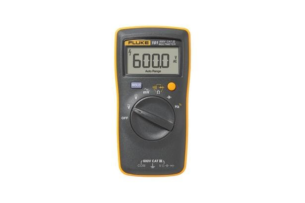
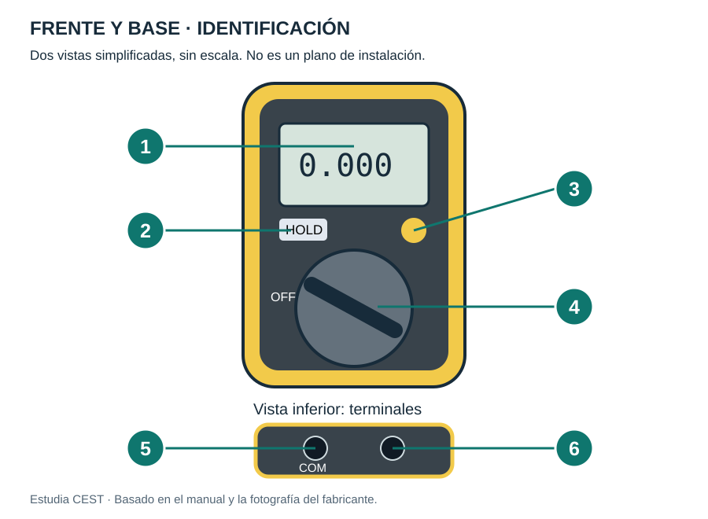

1. Presentación del equipo
Multímetro digital Fluke 101

¿Para quién y para qué escribimos?
¿Cuál es la función del equipo?
Escriban dos frases propias basadas en la lectura.
2. Partes y funciones

Plano de identificación sin escala. No es un plano de instalación.
- 1. Nombre y función:
- 2. Nombre y función:
- 3. Nombre y función:
- 4. Nombre y función:
- 5. Nombre y función:
- 6. Nombre y función:
¿Cómo se relacionan dos de estas partes?
Respaldo en la fuente
Anoten el manual y la página o sección que consultaron:
3. Indicaciones claras
Escriban cuatro indicaciones comprobadas. Empiecen con un verbo, nombren la parte y conserven la advertencia.

¿Dónde comprobaron las indicaciones?
4. Seguridad y cuidados
Escriban dos advertencias esenciales
Escriban los cuidados indicados en la fuente
Cuándo suspender el uso y pedir ayuda
Respaldo de estas indicaciones
Indiquen las páginas o secciones del manual consultadas:
Este trabajo no autoriza a operar equipos. No se prueban instrucciones mediante mediciones, soldadura ni conexiones.
5. Consulta rápida
Dibujen una ruta para consultar el manual
Usen cajas y flechas. Ejemplo: «No reconozco una parte» → «Busco su número en la página 2». Agreguen rutas para una duda sobre cuidados y otra sin respuesta. No dibujen un circuito.
Expliquen cuatro términos para un principiante
Consulten el vocabulario de la lectura. Usen palabras propias.
- Término y explicación:
- Término y explicación:
- Término y explicación:
- Término y explicación:
¿Qué pregunta resuelve esta página?
6. Fuentes y revisión
Fuente principal
Páginas o secciones usadas y fecha de consulta:
Origen de las imágenes y del plano
Plano didáctico: Estudia CEST. Si lo modifican, declaren la adaptación. Atribuyan cualquier otra imagen que incorporen.
Dos cambios después de la revisión
Registren dos cambios: antes / ahora / por qué. Ejemplo: «Accione» / «Presiona» / «El principiante entiende mejor la acción».
Comprueben antes de entregar
□ Información fiel y fuentes localizables. □ Escritura propia. □ Imágenes y leyenda útiles. □ Dos correcciones justificadas. □ Cada integrante puede explicar una decisión.
Clase 4: entreguen estas seis páginas y el borrador inicial al docente, en papel o PDF por el canal que indique.